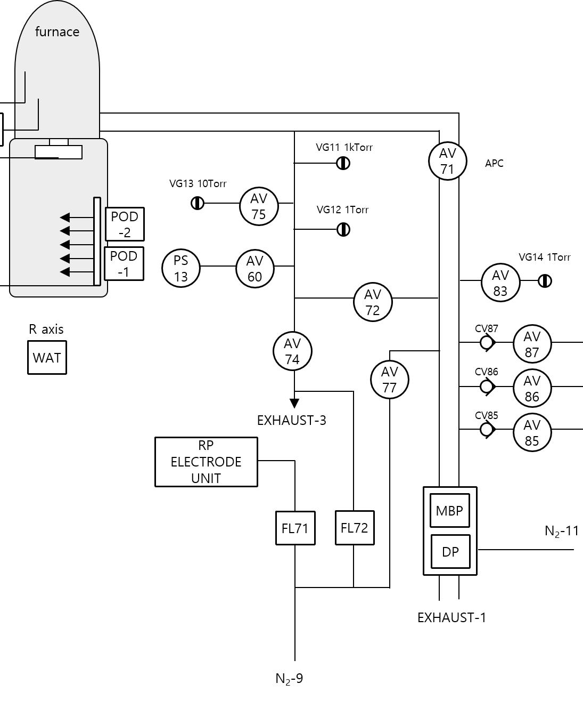

VG12 Gauge 상태 확인
① Base 압력 변화 확인(Leak 점검)
- 공급되는 가스가 차단된 상태에서 PUMPING 진행 시 최저 압력을 확인한다. 이를 Base 압력으로 정의하며 Base 압력이 10 mTorr 이상인 경우 추가 N2 퍼지 및
안정화를 진행한다.
- 충분히 N2 퍼지된 상태에서 AV71(APC)를 닫으며 VG12, VG13의 압력 변화량을 점검한다.
- VG12와 VG13의 변화가 동일하고 LEAK 수치가 3 mTorr/5 min 이내이면 정상으로 판단한다.
- VG12와 VG13의 압력 변화 편차가 큰 경우 VG12 압력을 확인하며 편차가 클 경우 VG12 Gauge 교체가 필요하다.
② 가스 유량 대비 Gauge 압력값 비교 점검
- Pumping을 진행하여 튜브 내부를 고진공 상태(VG13 < 10 mTorr)로 만든다.
- 가스 라인과 튜브 내부를 N2 Gas로 퍼지한다.
- 다시 고진공 Pumping 상태에서 VG12, VG13 압력 값을 비교 확인한다.
- N2 MFC를 이용해 특정 유량을 흘리며 VG12, VG13을 비교한다.
- VG12, VG13 변화가 셋업 기준 대비 이상치가 있을 경우 Gauge 교체 등 추가 조치를 수행한다.

TUBE에서부터 PUMP까지의 구성